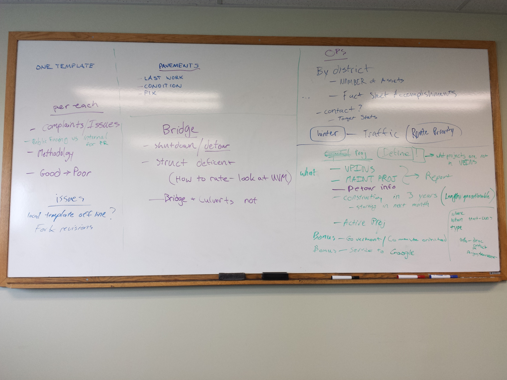
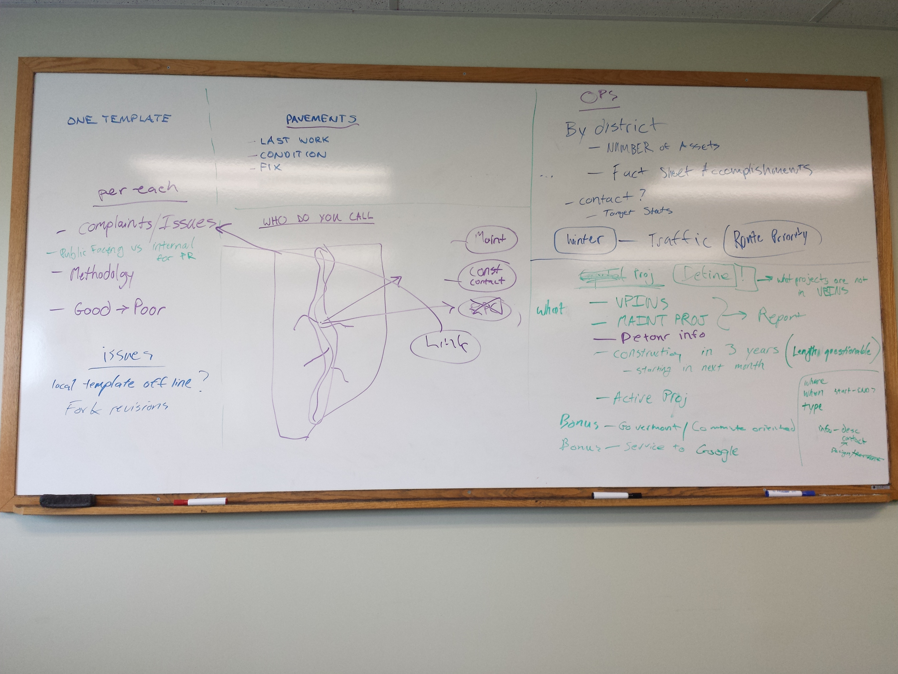

Day 1
Morning Brainstorm
Guiding Principles
- Tie "Why" into every answer we give
- For example, give a high-level explanation of pavement treatment decisions along with the assessment.
Wish-list
- Automated Answers via mailing list
- Public fills out problem about an asset
- Email auto-responder about how we make decisions about fixing the asset
- Have a brief bullet list at the top with a brief explanation
- Have a little more detailed explanation below
- If they're still concerned then they can click to email the appropriate person
Pavement
- My road is in terrible condition. When did you last do work here?
- What is the actual condition?
- When will it next be paved?
Why do we do what we do?
Bridge
- Shutdown\Detour clearly defined\displayed\warned in advance
- Construction
- Structurally deficient
- NBI - how we rate - UVM
- "Town Short vs Town Long vs UltraShort" -> just bridges
- What is the user story for bridge condition? Is it necessary? linked to customers experience?
OPS Top 10
- Trying to get districts back to doing maintenance instead of mini projects.
- Ditching Culvert Guardrails Mowing Litter Tree Trimming Plowing
- Show the public a regional picture of activities at a district level - aggregate stats. "We're doing things"
- Accomplishments: How many plug joints, how many bridges washed Mimic Filkorn's fact sheet to legislature
- Also have asset stats - how many culverts per district - emergency summary
- This sounds like a great place for d3.js
- Why do we do what we do regarding (winter) maintenance?
- Ex: Litter picking - where and how much
Capital Projects
- What are capital projects
- "What is the status of a particular project?"
- What do we map?
- VPINS
- Maintenance projects
- They will ask us for planned maintenance projects
- From the public's perspective, a large culvert repair isn't different than a project
- Things we can't map go into a report
- What do we share?
- Construction year (next 3 years)
- What projects are going to start THIS MONTH? (time slider option)
- Get emails when a project in your area or on your commute
- Where When (Start-end) Type Info - description Point of Contact - one person "Project Manager"
Who do I call?
WHY do people call?
- Maintenance
- Construction
WHO do they call?
- Regions
- DTA
- RCE
- Projects
- RPC's
- Maintenance
How do we direct them? Click a point, buffer around it, who do they call? Show a blank map with just some simple polygons
White board Images
 Afternoon discussion
Examples of good AGOL pages
| VTrans | Oregon | Utah | Iowa | North Carolina | Washington | Maryland |
| Alaska | Boston | Minnesota | Idaho | Colorado | Texas | New Mexico |
What is GitHub
Link to PresentationGithub Concerns
- Spend too much time worrying about GitHub and lose track of the goals
- It's more geared towards technical programming
GitHub Benefits
- We might not have to use it so much
- One-stop documentation
- For the future
Day 2
Steering Committee
- Filkorn: SeeClickFix. I get questions about mowing a lot, and potholes
- Viani: We don't have maintenance plan info, just what has passed
- Nailor: This is a parking lot issue for the future - send it to Ops for consideration in the future. You can plan on rolling out a maintenance plan in the future
- Marshia: If you can't do it now then don't. You don't have the info now.
- Allen: This is kind of an internal performance measures
- Marshia: Projects in VPINS will be mapped - OK. Maybe future large maintenance projects will be in VPINS
- Nailor: Don't build a system around another data source - it will remove the impetus of OPS to build a sustainable database system
- Filkorn: Leveling? - not included at the moment - should be? Give specific recommendations to program managers for how they can be included - change their behavior
- Allen: Track threats and opportunities
- 511 vs VTP3 - there are many versions of the message right now
- Filkorn: If THIS system is consistent, maybe it becomes centralized
- Nailor: Identifying the "system of record" that carries the offical word
Top Achievements
- Matt mocked up the framework for the home page
- Evan got a long ways on the contacts map
- Stephen made this for showing the daily work and discussion summaries
- Reid worked on importing historic projects into dTIMS to overlay with condition sectioning (with some struggle with new dtims product)
- Kevin worked with DBA and devlopers to build a VPINS project view on the GIS database. Afternoon was spent automating the projects info to geometry
Day 3
Steering Committee
7:30
Per Nailor:
- Have the header of the popup mirror what people would want.
- "If you are curious about construction in this area, call:"
- "If you have a question about how this road is maintained, call:"
- "If you work for a municipality and have questions about this road, call:"
- Then send to Filkorn for comment
Scott: Should we include email addresses? Work with Bean and Craver to figure out why the Ops emails aren't in the ref table
Allen: When click, drop-down box with 3 pop-ups?
Matt: Link as query string to open data portal
Viani: What are the themes for the homepage bins? The popout box should have a common theme
The top level shows a picture and title of the theme, then the popout will contain links to the different places
Scott: All data in GDB_VTrans is publishable under AGO ODP
8:15
Top Achievements
- Matt rebuilt the VTransparency homepage from scratch
- Evan built out the geoprocess script to create the contacts data
- Stephen built out the Open Data Portal
- Reid finished and published the 2013 pavement condition data
- Kevin continued working on the projects processing scripts
Day 4
Steering Committee
7:30
New website - great!
Open data portal - Great!
Marshia: Who is this for? You lost me between the home page and the data site
Nailor: Pushing the data out to the open data portal wasn't a primary goal of this effort, but is an unintended benefit of this process
Pavement data - linking to the latest pavement projects is great.
Nailor: Can you show the town and route on the pavement map?
Scott: Why the OSM basemap?
Scott: Why routing?
Marshia: Show the routing.
Allen: Can you use the route as a selection set to display the condition of your routing?
Contact Map - popups have questions at the top
Most of the data was automated, but lacking info on email address for district contacts. Might not be sustainable.
Can it be from MATS?
Filkorn: We update the website manually
Nailor: Note down the issue so we can research a solution later.
Filkorn: How can we develop consistency across the agency. How can we simplify
Marshia: Caputring a comprehensive parking lot is critical to the future. Things we highlight here for the future will be major targets for the agency. Not just "This is awesome" - "These are the things we know we should do. Force the agency to address the issues brought up. Prioritize them"
Viani: Bridges? Do we need condition?
Nailor: national interest in strucutral defficiency sometimes drive it
Scott: towns ask about bridges - summary reports, data etc from Thurber.
Filkorn: Where are the bridge inspection reports?
Marshia: The report is - "We want to show bridges, but we don't know how to display it" for discussion on Monday
Filkorn: Load limits would be dreamy. We get asked about load postings all the time. Different than the individual route permit
Nailor: List bridge restrictions relevant to the public
Allen: Get the more detailed information available too for analysis
Scott: Restricted crane movement map was valuable.
Data support meeting
Projects issue - be sure to bring up Monday so Marshia can put the pressure on to get project managers to input early start date
Contacts issue - there is not a good source of information
9:00 am